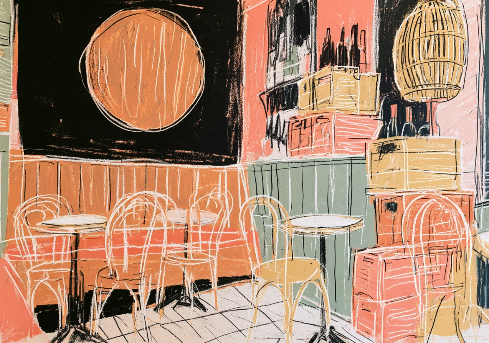
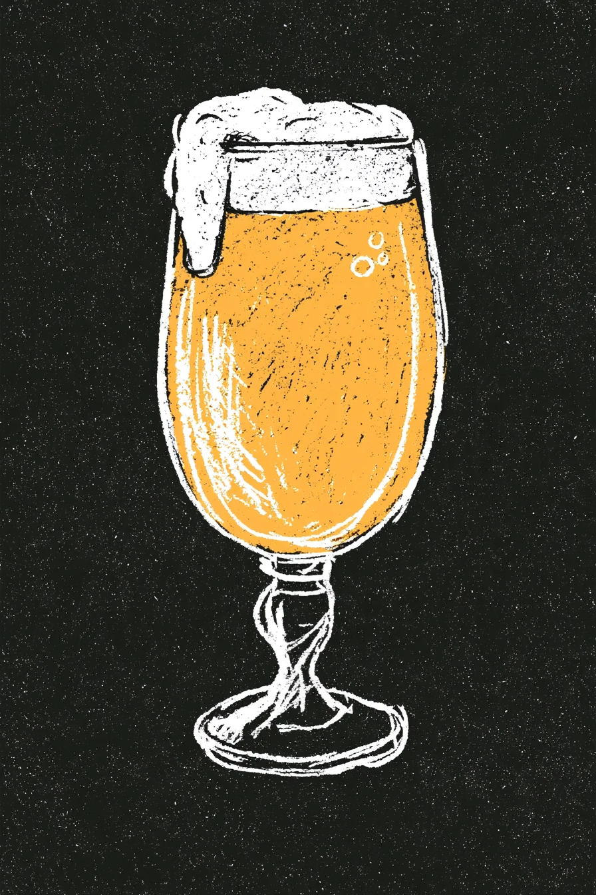
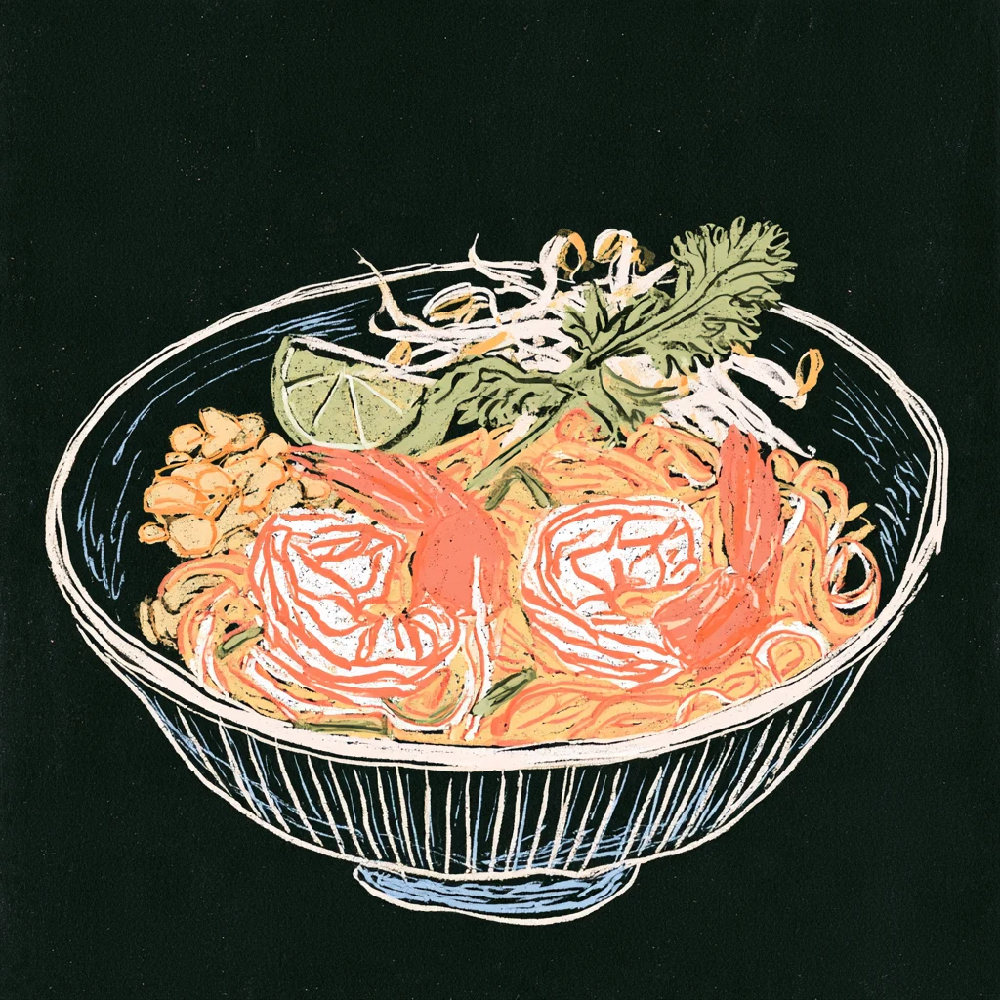
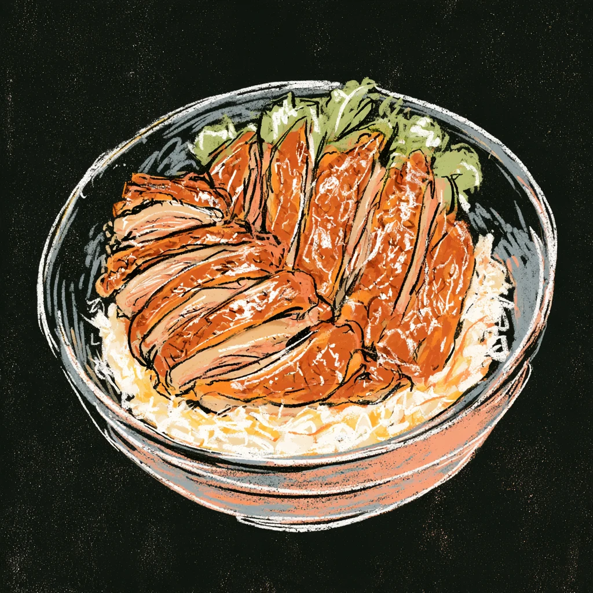
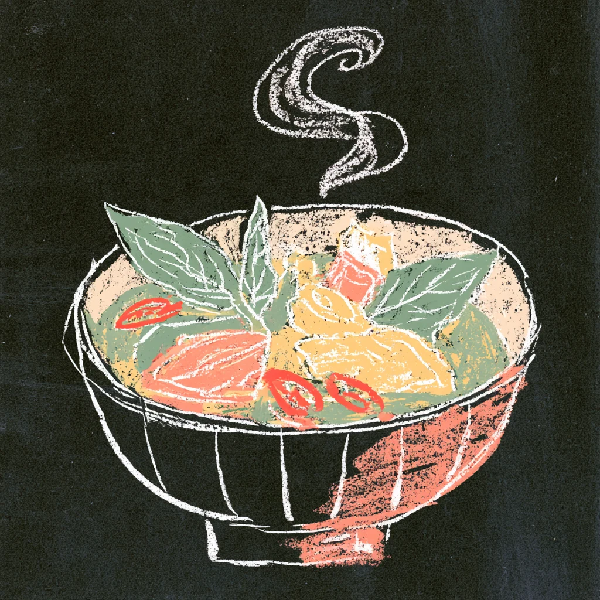
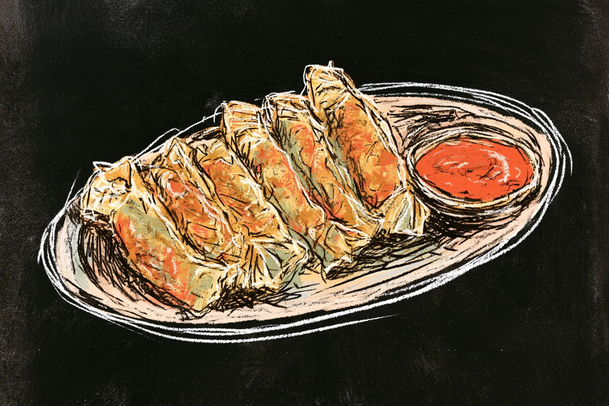
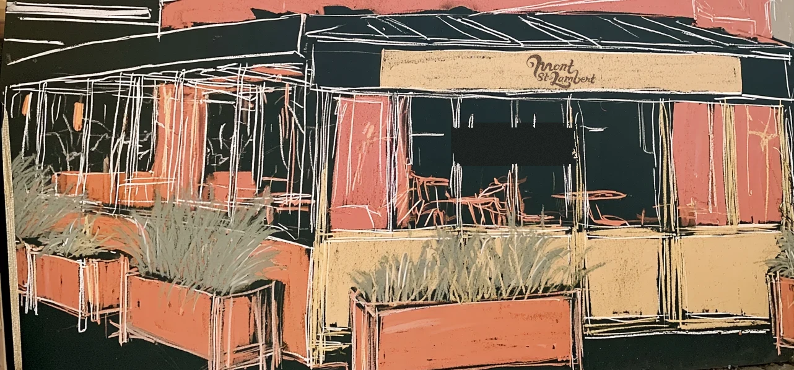

Un bar-restaurant
au cœur du Limpertsberg.
Bières
La Chouffe
Leffe Blonde
Hoegaarden Blanche
Vedette Extra Ordinary IPA
Duvel
Kasteel Rouge
Liefmans Fruitesse
Trappistes Rochefort
Orval
Chimay
Westmalle Tripel
Kwak
Franziskaner Weissbier
Tsingtao
Diekirch

OrvalChimayWestmalleRochefortKwak
Et des vins, des rhums, des whiskies.
Thaï
Pad thaï aux scampis
Poulet au curry vert
Soupe thaïe au curry rouge
Salade de papaye verte
Canard façon thaï
Bœuf au basilic
Chine et canard
Canard Spécial Maison
Canard à la Pékinoise
Gyoza
Raviolis vapeur aux crevettes
Tofu façon grand-mère
Aubergine Yuxiang





Menus du midi très accessibles,
du lundi au vendredi
Le soir, jusqu’à minuit
Fermé le dimanche
Terrasse couverte,
sur l’avenue du Bois
97, avenue du Bois
22 49 50